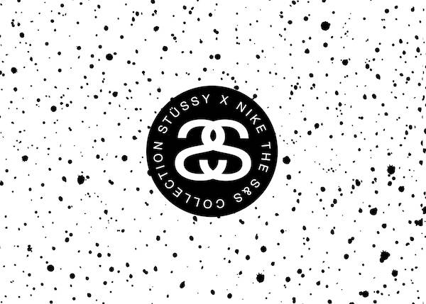

斯图西(Stussy) 是源于美国的潮流品牌。创始人Shawn Stussy将滑板服、工作服、旧校服的设计加入到斯图西(Stussy) 的服装设计中，形成了一种有别于原有风格的街头服装。 如今，斯图西 (Stussy) 作为一个在世界范围得到潮人们敬重的品牌存在着，然而早在三十几年前，斯图西(Stussy)的出现就预示着这一切的到来。 现在的我们恰恰正处于一个以Tee为代表流行文化的时代，而Stussy便是这种文化的代表之一。七零年代是punk兴起的时代，八零年代为我们带来了Rap。Punk打破了创作与美感的界限并教会了我们任何人都可以组BAND来享受音乐的魅力。而Rap则在不断推动社会传统的界限，并开始探寻remixing&sampling的真谛，这些新鲜的想法和领地为时装和文化表达与传播创造了崭新的舞台。 伴随着Stussy的成功并不断传播到世界各地，New York、London、Tokyo以及其他地区的时尚先锋都联系在一起。Stussy的设计灵感来源于正Hot的国际音乐人、极限运动、DJ和那些有着相同或相似品味的艺术家们，着也帮助了Stussy成为全球国际街头先锋。 1980年，当SHAWN STUSSY还在加州的LAGUNA海滩边开始销售冲浪服装、用品的时候，他也许不会料到，自己的名字会在日后被无数人追捧，甚至顶礼膜拜。 stussy stussy 当时很喜欢冲浪的Shawn Stussy将自己设计的涂鸦签名印在了冲浪板上，之后渐渐的许多看到了Shawn Stussy的签名后都觉得很不错，于是有些人会要求Shawn Stussy帮她们在自己的滑板或者衣服上涂鸦,发觉效果不错后，那年他开始将其日后最出名的冲浪板式涂鸦签名印在Tee上并开始将这些Tee和冲浪板一 起销售。 随着衣服的产量逐渐扩大，Shawn Stussy开了一个销售冲浪服装、用品的公司，并推出了"斯图西(Stussy) "这个品牌，而那个涂鸦的名字就理所当然地成了品牌商标。就这样Shawn Stussy创造的原始并现代的时尚美学概念很快就发展成为新一代海滩文化。 1985年，他开始进军时装市场，并很快取得成功，从冲浪到时装，STUSSY完成了一个难度相当大的转型。并且在同一时期，STUSSY也开始向滑板市场进军，应该说从冲浪到滑板，这种转化是比较正常的。 当然，SHAWN STUSSY不会放过街头服装这个市场。他将滑板服、工作服、旧校服的设计加入到STUSSY的服装设计中，形成了另外一种有别于原有风格的街头服装。那个时期的街头服饰界也正面临着变革，新品牌的诞生、大尺码服饰的流行……STUSSY借着这个难得的机会，一举奠定了自己在街头服饰领域的重要地位。 |